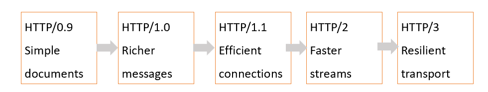

HTTP/0.9 - The Beginning
The earliest HTTP was designed to retrieve simple hypertext documents. It used basic GET requests and returned very little extra information.
As websites became more complex, HTTP developed new features to support richer content and more efficient communication.

The earliest HTTP was designed to retrieve simple hypertext documents. It used basic GET requests and returned very little extra information.
HTTP/1.0 introduced headers, status codes, and support for different content types. Communication became more informative, although connections were still inefficient.
HTTP/1.1 made it possible to reuse connections for multiple requests. It also improved support for virtual hosting and caching.
HTTP/2 uses binary framing, multiplexing, and header compression. Multiple streams can share one TCP connection more efficiently.
HTTP/3 uses QUIC over UDP instead of TCP. QUIC supports independent streams and can reduce delays caused by packet loss.
| Version | Transport | Main Improvement |
|---|---|---|
| HTTP/1.1 | TCP | Persistent connections |
| HTTP/2 | TCP | Multiplexing and header compression |
| HTTP/3 | QUIC over UDP | Independent streams and improved transport |
The core request-response model remains important across HTTP versions.